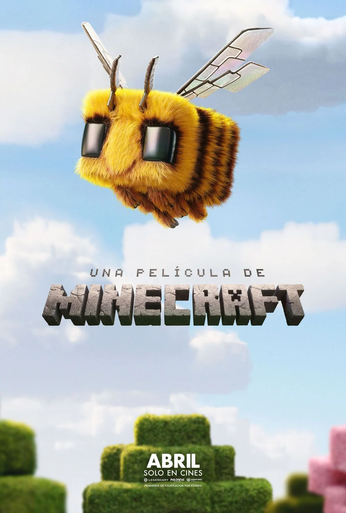
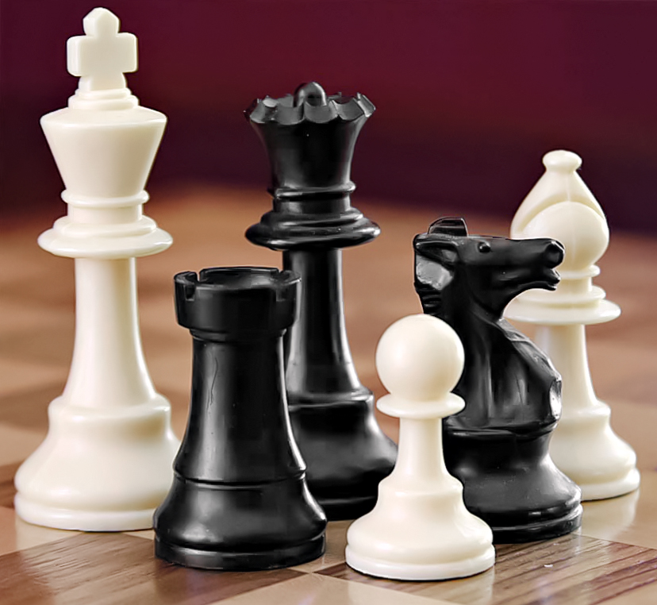

Practica utilizando flexbox
Videojuegos
league of legends

Es de los primeros videojuegos que jugué en mi vida, en el cual me volví bueno, gracias a él tuve una paciencia inquebrantable. actualmente no lo juego tanto como antes, pero sigue siendo de mis videojuegos favoritos.
Assassin's Creed valhalla

Sobre este videojuego, he sido gran fan de la saga Assassin's, pero nunca tuve la oportunidad de jugarlo hasta hace poco y cumplió con todas mis expectativas, aparte de tener una gran historia muy emotiva y caótica por como se relaciona con la historia de la saga.
Grand theft Auto 4

Es de los primeros juegos que jugué en Xbox 360 como a los 14 años, en esa época no entendía bien la historia pero con el tiempo me di cuenta de lo buena que es, en lo personal Niko Bellic es uno de los mejores personajes que ha tenido la saga.
Peliculas
Interstellar

Me intereso por ser una pelicula del espacio, y a mi me encantan ese genero es mi debilidad en peliculas. La trama esta incrieble y como al final cada fragmento de la pelicula tiene su porque no tiene cosas hechas al azar algo que disfrute mucho al no dejar actos argumentales.
Mission: Impossible - Dead Reckoning Part Two

Una de las entregas más intensas de la saga, la fui a ver con mi familia el día del cumpleaños de mi mamá, fue su regalo y la pasamos muy bien todos juntos en familia, llevamos en nuestro recuerdo toda la saga. Siempre la recordare como si fuera parte de la familia esta saga.
Una película de Minecraft

La fui a ver con mis amigos y siendo alguien que ha jugado Minecraft, verlo en pantalla grande fue divertida aunque no es fiel tanto al lore, pero para pasar el rato y mas con amigos es buena peli.
Deportes
Mi aficion por el ajedrez

Llevo aproximadamente 2 años jugando ajedrez, no me lo tomo muy en serio pero es un juego que me encanta, me gusta ponerme a prueba y ver hasta donde puedo llegar. Disfruto mucho ver partidas de otros jugadores y aprender de ellas, aunque lamentablemente no tengo un elo muy alto y no lo practico en mesa física, solo de forma digital, pero sigue siendo uno de mis pasatiempos favoritos. Es un juego que te enseña a pensar antes de actuar, cada movimiento cuenta y un solo error puede costarte la partida, eso es lo que más me engancha del juego.